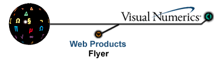

Overview of JNL, a Numerical Library for JavaTM
JNL, a Numerical Library for Java, is a set of classes for the most important numerical functions missing in Java. The library is comprised of one numerical type class, Complex, and three categories of numerical functions classes: the special functions class, the linear algebra classes, and the statistics class. All classes use double precision floating point as the underlying float type. These classes are described below.
Complex Numbers
The class Complex instantiates an object as being of type Complex and provides methods for double precision complex arithmetic. Methods for the addition, subtraction, multiplication, division, negation, and conugation of complex numbers are included. These methods are overloaded to allow for mixed double and Complex operands.
Linear Algebra
The linear algebra classes manipulate rectangular or square arrays of type double or Complex. A rectangular matrix is a double[][] or Complex[][] with all of its rows the same length. A square matrix is a rectangular matrix with the number of columns equal to the number of rows. All matrices are row major with zero as the index of the first element of any row or column.
The class DoubleVector contains static methods for manipulating vectors. It does not define a vector object; it is not possible to create an instance of DoubleVector. There are methods for vector norms, maximum and minimum elements, and dot product.
The class DoubleMatrix contains static methods for manipulating matrices. It does not define a matrix object; it is not possible to create an instance of DoubleMatrix. There are methods for matrix multiplication, inversion and solving linear systems.
The classes DoubleCholesky, DoubleLU, DoubleQR and DoubleSVD encapsulate standard matrix decompositions. Their constructors take a matrix as an argument and compute the decomposition. This may throw an exception. Other member functions are then used to use or return parts of the decomposition.
Analogous to these classes for double-precision arrays there are also classes for Complex arrays. They are class ComplexVector, class ComplexMatrix, ComplexCholesky, ComplexLU, ComplexQR and ComplexSVD.
Special Functions
The class Sfun contains a collection of special functions. This class is analogous to the existing class java.lang.Math, but contains more advanced functions. This class is a collection of static member functions and data; it cannot be instantiated.
Statistics
The class Statistics
contains a collection of basic statistical functions. This class is a
collection of static member functions; it cannot be instantiated.
Copyright © 1997 - Visual Numerics, Inc.®